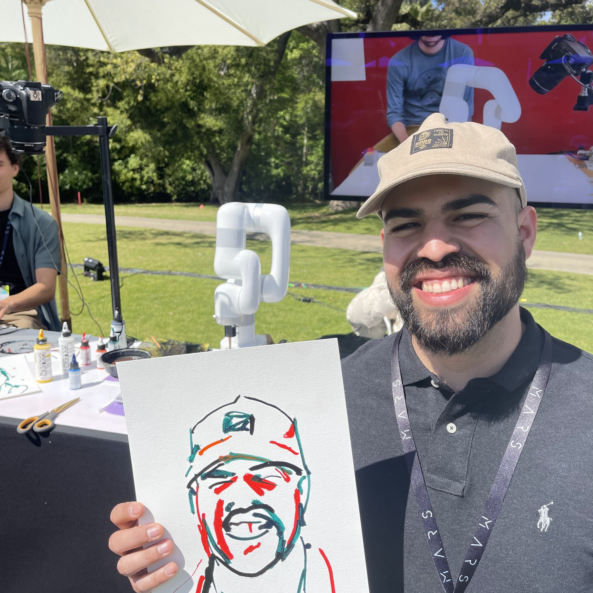
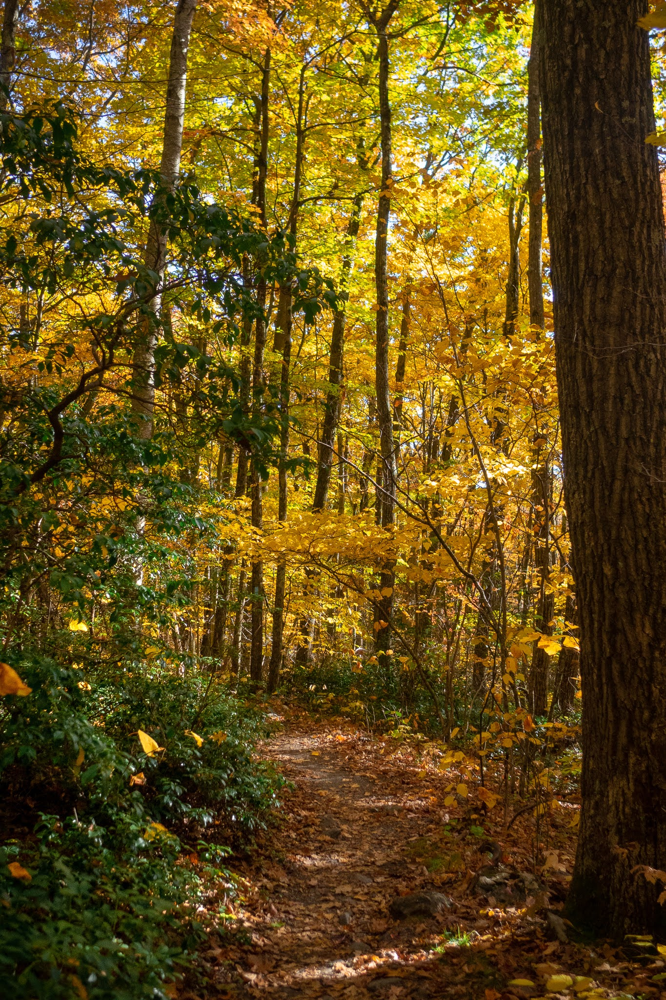
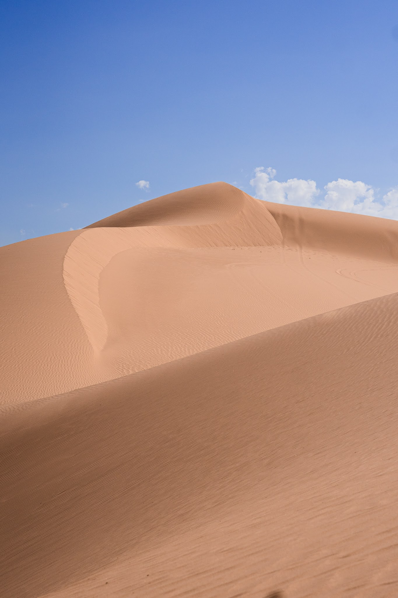
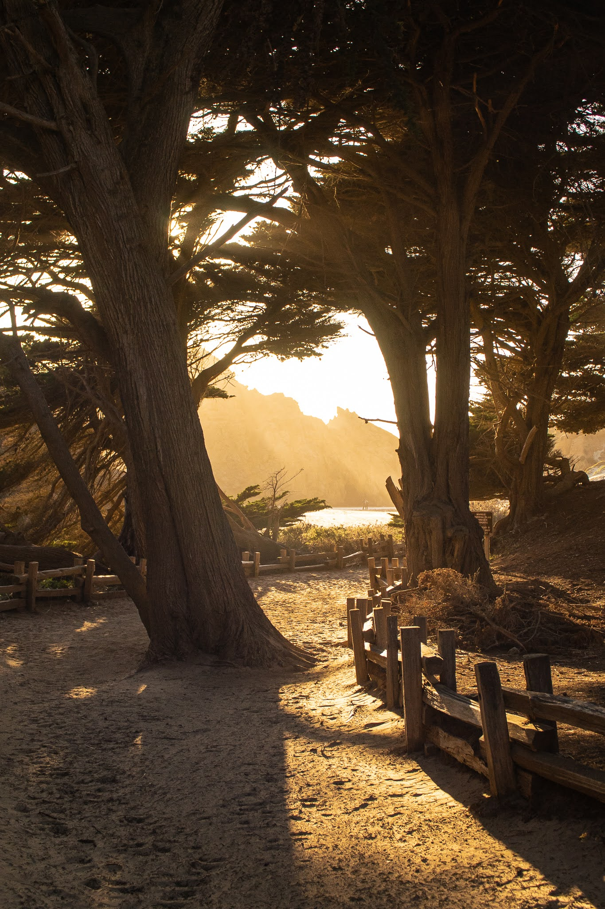
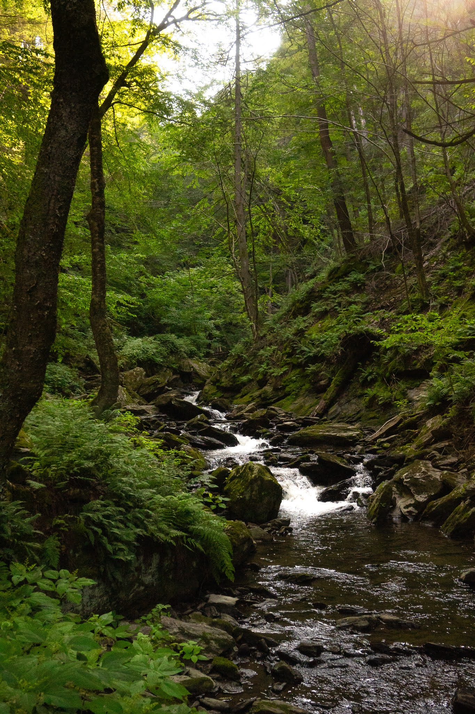
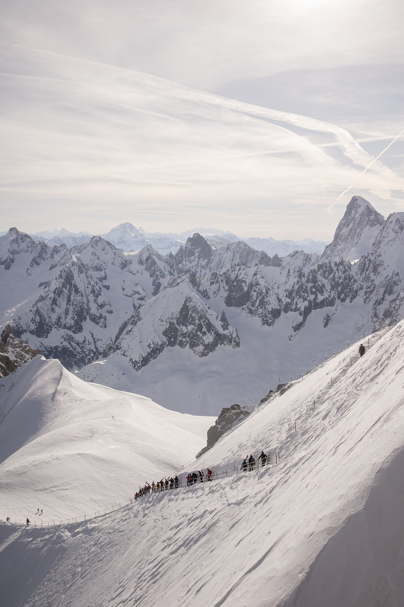

Present
Ph.D. Candidate, Mechanical Engineering
Yale University
ABOUT

I am a sixth-year Ph.D. student in Mechanical Engineering at Yale University, where I work in Professor Rebecca Kramer-Bottiglio's lab. I am currently a visiting researcher at Princeton University.
As a first-generation college student, my academic path began at Cypress College before I transferred to UC Irvine and later continued to Yale for my Ph.D. My research focuses on adaptive and amphibious robots that can change their shape and behavior to move effectively across different environments.
BACKGROUND
Present
Yale University
Undergraduate
University of California, Irvine

Outside the lab, I seek out new experiences and time outdoors. I enjoy hiking, skiing, sailing, photography, working on my car, and running when my knees allow it.




